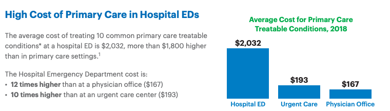

Combating Unnecessary ER Visits: Mass Balance Business Models and Behavior Change
The number of unnecessary Emergency Room (ER) visits is alarming. Consider the following:
"Most studies find that at least 30% of all ED visits in the US are non-urgent, although select studies such as those using National Hospital Ambulatory Medical Survey data report lower percentages (<10%).[1] [2] [3] [4] [5] [6]"
A decade later, not much has changed[7]:
"Some patient populations, such as those with chronic pain diagnoses, those with multiple chronic conditions, or older adults, are more likely to utilize EDs frequently.[8] Often people suffering from conditions such as those require highly complex care for health needs stemming from factors such as multimorbidity, psychiatric comorbidities, psychosocial issues, or a combination of these factors.[9] Patients who visit the ED often represent approximately 4.5–8% of ED patients but account for 21–28% of all ED visits.[10] While the definition of 'often' varies with some studies suggesting a threshold of 3 or more annual individual patient visits while others employ 12 or more annual visits,[11] the need to meet the care needs of patients with different interventions in the ED is commonly noted."
Given the significant financial and resource burden that unnecessary ER visits place on the healthcare system, it's time we do something about it!
Defining the Value Landscape
In healthcare, population health interventions are typically framed using one or more of the following value levers:
- Reducing unnecessary procedures/claims by providing timely interventions that lower the risk of complications (e.g., reducing CHF admissions with remote patient monitoring).
- Enhancing behavior change by optimizing interventions through targeted member engagement (e.g., preventing surgeries through personalized outreach).
- Improving provider networks to help decrease admissions and reduce insurance claims payouts.
- Increasing intervention efficacy through ROI-sensitive targeting and multi-channel 'nudging'.
- Better biomarker control linked to medical cost savings (e.g., controlling blood pressure to reduce diabetes complications).
- Enhanced utilization management to decrease paid claims (though this lever is less patient-friendly).
- Specific utilization savings by offering the same services at lower costs.
- Incremental benefits from program enrollment, conditional on engagement or biomarker collection.
- Preventing disease progression and adjusting cost trajectories through early intervention.
- Closing and maintaining gaps in care.
- Boosting risk-adjusted revenue by improving quality metrics like HEDIS or Star ratings.
- Realizing ancillary benefits such as increased productivity and reduced workers' compensation claims (particularly for commercial plans).
While there are other nuanced levers, these constitute the majority of commonly applied strategies.
Defining the Value Framework for Unnecessary ER Visits
The strategy to reduce unnecessary ER visits primarily hinges on two value levers:
- Reducing unnecessary procedures/claims by engaging members with timely interventions that lower their risk of complications (Value Lever 1).
- Achieving specific utilization savings by providing the same services at a lower cost (Value Lever 7).
While the first lever is relatively straightforward, the second presents challenges. Healthcare service utilization often operates as a zero-sum game—a mass balance. When you decrease utilization in one area, it may naturally increase in another. This dynamic complicates the business case and makes accurately accounting for savings more intricate.
Assumptions and Hypothesis
To address this, let's define the different states surrounding ER utilization:
- Emergency Room (ER): High-cost, emergency care used for all health concerns, including non-emergent issues.
- Primary Care (PC): Regular doctor visits for non-urgent issues, serving as an alternative to ER visits.
- Urgent Care (UC): Quick, less costly treatment centers for minor conditions.
- Telehealth (TH): Virtual care for non-emergent consultations, offering a convenient and low-cost alternative.
- Self-Care (SC): Managing minor conditions at home without direct medical intervention.
Hypothesis:
- Members who frequently use the ER incur significant financial burdens due to high out-of-pocket costs.
- By implementing targeted interventions—such as financial education, cost transparency tools, and enhanced access to lower-cost alternatives—we can encourage a portion of these members to reduce their reliance on the ER.
Mass Balance Modeling
To model the dynamics of healthcare utilization, we can use a mass balance model—a concept borrowed from systems engineering. By viewing members as existing within various 'states' or 'boxes'—each representing a healthcare setting—we can model the flow of individuals between these states using matrix algebra.
This approach allows us to parameterize the transitions between different healthcare settings, creating a steady-state model that simplifies complex dynamics into manageable mathematical expressions.
Creating the Transfer Matrix
We represent the transitions between healthcare settings using a transfer matrix (Equation 1). Each element
Equation 1: Idealized transfer matrix representing the flow of individuals between healthcare settings.
Hypothetical Example
"Two-thirds of hospital ED visits annually by privately insured individuals in the United States – 18 million out of 27 million – are avoidable.
An avoidable hospital ED visit is a trip to the emergency room that is primary care treatable and not an actual emergency. Ten common primary care treatable conditions frequently treated at hospital EDs include bronchitis, cough, dizziness, flu, headache, low back pain, nausea, sore throat, strep throat, and upper respiratory infection.[12]"

Let's assume United Healthcare's estimate is accurate, and about 66% of all ER visits are avoidable. Let's also assume that the average cost for telehealth is ~ $90 on average. Now, let's introduce our highly effective intervention program, which manages to reduce 50% of these avoidable visits (roughly 35% of the total ER visits). This leaves about 65% of ER-bound members who will still visit the ER—effectively "immobile." While this is EXTREMELY OPTIMISTIC, let's run with it for now.
Next, let's consider some off-target effects from our intervention. For instance, some members might confuse urgent care with the emergency department, resulting in a fraction of them heading to their Primary Care doctor instead of staying in urgent care. We’ll also assume a similar, but less significant, off-target effect on telehealth visits.
Here's a quick summary:
85% of individuals remain in Self-Care.
5% flow into Primary Care.
5% flow into Urgent Care.
5% flow to Telehealth.
Primary Care (PC):
85% of individuals remain in Primary Care.
15% flow to Emergency Room.
Urgent Care (UC):
80% of individuals remain in Urgent Care.
5% flow into Self-Care.
5% flow to Emergency Room.
10% flow into Telehealth.
95% of individuals remain in Telehealth.
5% flow into Emergency Room.
Emergency Room (ER):
75% of individuals remain in the Emergency Room.
5% flow into Telehealth.
10% flow into Primary Care.
10% flow into Urgent Care.
Visualizing the Transfer Matrix
We can visualize the transfer matrix to better understand the flow dynamics:
Figure 2: Visual representation of the transfer matrix.
Defining the Current State
We start by defining the initial number of events in each healthcare setting (Equation 2). Let's assume, for now, that we have an ER problem, but it's not the highest utilized service.
Equation 2: Initial state definition, assuming approximately
Calculating the Future State
By taking the dot product of the current state vector with the transfer matrix, which is effectively a matrix of behavior change flows, we can estimate the future distribution of events (Equation 3):
Equation 3: Calculating the future state using matrix algebra.
Estimating Cost Savings
To determine the financial impact, we introduce a **cost array ** representing the average cost per event in each care setting. By calculating the difference between the current and future states, and then performing a dot product with the cost array, we can estimate the total savings generated by the intervention.
Equation 4: Calculating the cost difference resulting from the intervention.
Solving Generically
You can mess with this however you'd like, but let's initialize this generic solver with some practical information.
To generalize this approach, we can adjust the model parameters interactively, allowing us to simulate different scenarios and interventions. By updating the transfer matrix, cost array, and initial state, we can observe how changes impact the future state and cost savings.
N.b., that the transition matrix needs to sum to 1 by column. I've implemented a little function that shows you if you've done it correctly. If everything is green, you're all good. If it's blue, then the sum is too high; red if it's too low.
Oh good! If you haven't played with the example, and despite some of our off targeted effects driving spend a bit less efficiently than hoped, we'll save some money (~$1M or so). Nice. We'll see ~ 630 less ER visits than we would have otherwise normally observed. I hope we save some lives and some out of pocket costs for our members, as well!
Power Analysis
How can we be confident that our interventions are effectively reducing unnecessary ER utilization?
To validate our efforts, we need to design an experiment capable of detecting a statistically significant reduction in ER visits due to our intervention.
Defining the Objective
Our primary goal is to observe a relative reduction in ER utilization. Specifically, we aim to determine the number of participants required to detect a certain percentage decrease in ER visits with a given level of confidence and statistical power.
Statistical Framework
We will use a two-proportion Z-test to compare the ER utilization rates between the control group (without intervention) and the intervention group (with our proposed measures).
The sample size required for each group can be calculated using the following formula:
Where:
is the sample size per group. is the Z-score corresponding to the desired significance level (α). is the Z-score corresponding to the desired power (1 - β). is the ER utilization rate in the control group. is the ER utilization rate in the intervention group.
Since we're aiming for a relative reduction, we can express
To initialize this problem (and you can play with whatever you'd like), let's assume that we're looking to observe a relative ~50% decrease in avoidable visits. Let's assume the UnitedHealth is correct, and roughly the rate of ER utilization is ~27M of 164M privately insured lives in the USA, or roughtly ~16.4% in the general commercial population. This would means we want to observe our base rate shift during our experiment from ~16.4% to 11% (Avoidable Visits: 66% of total ED visits. Reduction of Avoidable Visits: 50% of avoidable visits = 50% of 66% = 33% of total ED visits.)
That would make our
Let's consider the following parameters:
Calculating ( p_2 ):
Calculating the required sample size:
With these parameters, we determine that approximately
That's not very much, but then again, this would be a true RCT and not an intent to treat RCT. Further, the behavior change rate and relative reduction observed is somewhat absurd. If we were to redo this for something more reasonable (like a ~10% relative reduction in Uneccessary ER), we would need a lot more people (~7890 per arm).
Citations
[1] Northington W, Brice J, Zou B. Use of an emergency department by nonurgent patients. American Journal of Emergency Medicine. 2005;23:131–137. doi: 10.1016/j.ajem.2004.05.006.
[2] Carret M, Fassa A, Domingues M. Inappropriate use of emergency services: a systematic review of prevalence and associated factors. Cad. Saúde Pública. 2009;25(1):7–28. doi: 10.1590/s0102-311x2009000100002.
[3] Durand A, Gentile S, Devictor B, et al. ED patients: how nonurgent are they? Systematic review of the emergency medicine literature. American Journal of Emergency Medicine. 2010. doi: 10.1016/j.ajem.2010.01.003.
[4] Guttman N, Zimmerman D, Nelson M. The Many Faces of Access: Reasons for Medically Nonurgent Emergency Department Visits. Journal of Health Politics, Policy and Law. 2003;28(6). doi: 10.1215/03616878-28-6-1089.
[5] Kellerman A. Nonurgent emergency department visits. JAMA. 1994;271:1953–1955.
[6] National Center for Health Statistics. National Hospital Ambulatory Medical Care Survey: 2008 Emergency Department Summary Tables. 2008.
[7] Memedovich, A., Asante, B., Khan, M. et al. A mapping review of interventions to address patients who frequently seek care in the emergency department. BMC Emerg Med 24, 49 (2024). doi: 10.1186/s12873-024-00970-7.
[8] Kimmel HJ, Brice YN, Trikalinos TA, Sarkar IN, Ranney ML. Real-time Emergency Department Electronic notifications regarding high-risk patients: a systematic review. Telemed J E Health. 2019;25(7):604–18.
[9] Hudon C, Courteau J, Krieg C, Vanasse A. Factors associated with chronic frequent emergency department utilization in a population with diabetes living in metropolitan areas: a population-based retrospective cohort study. BMC Health Serv Res. 2017;17(1):525.
[10] Kumar GS, Klein R. Effectiveness of case management strategies in reducing emergency department visits in frequent user patient populations: a systematic review. J Emerg Med. 2013;44(3):717–29.
[11] Chiu YM, Vanasse A, Courteau J, et al. Persistent frequent emergency department users with chronic conditions: a population-based cohort study. PLoS ONE. 2020;15(2):e0229022.
[12] UnitedHealth Group. High Cost of Emergency Department Visits Could Be Avoided with Better Primary Care Access. UnitedHealth Group, 2019. Link.
[9] UnitedHealth Group. High Cost of Emergency Department Visits Could Be Avoided with Better Primary Care Access. UnitedHealth Group, 2019. Link.